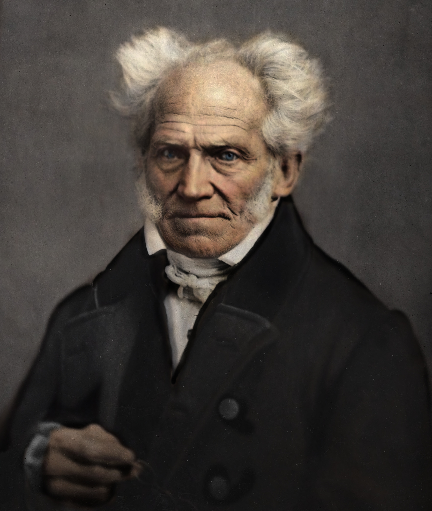
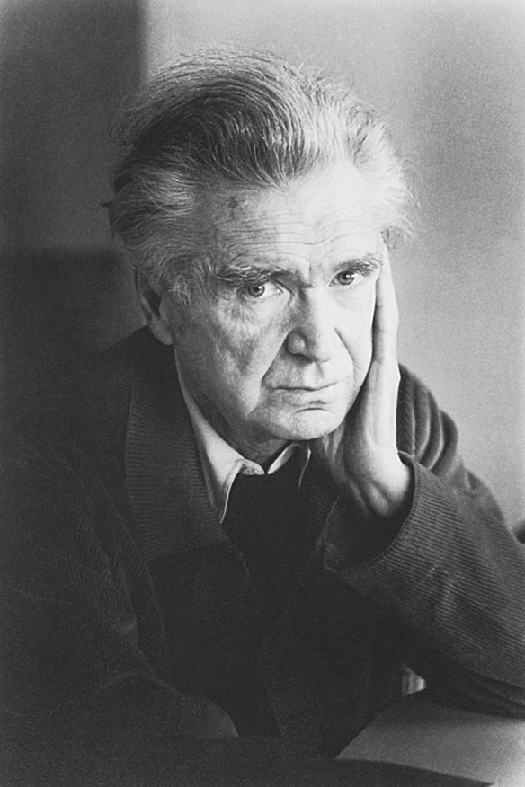

The Architects of Nothing
"The men who looked into the void — and the void that looked back."

Friedrich Nietzsche
"God is dead. God remains dead. And we have killed him."
The man who named the crisis. Nietzsche saw that the Enlightenment had killed God — not as a being, but as the foundation of all Western values. Without God, morality, purpose, and truth lose their anchor. He called this "the death of God" and warned that humanity was not ready for the consequences. His response was not despair but creation — the Übermensch, the human who creates their own values in a meaningless world. He went insane at 44. The void won.
Thus Spoke Zarathustra (1883) · Beyond Good and Evil (1886) · The Will to Power (1901)Albert Camus
"One must imagine Sisyphus happy."
Camus rejected the label "nihilist" — he called himself an absurdist. But his starting point is pure nihilism: the universe is silent, meaningless, indifferent. Humans scream for meaning into a void that does not answer. This gap — between our need and reality's silence — is the Absurd. His answer: neither suicide nor faith, but revolt. Keep pushing the boulder up the hill. Not because it reaches the top. Because the act of pushing is itself the meaning. He died in a car crash at 46, a manuscript of an unfinished novel in his bag.
The Stranger (1942) · The Myth of Sisyphus (1942) · The Rebel (1951)
Arthur Schopenhauer
"Life swings like a pendulum between pain and boredom."
The philosopher of pessimism. Schopenhauer argued that the world is driven by a blind, purposeless force — the Will — that creates endless suffering through desire. Every satisfied want creates a new want. Every pleasure is merely the temporary absence of pain. His solution was radical: deny the Will through asceticism, aesthetic contemplation, and compassion. Art — especially music — offers temporary escape from the cycle. He lived with a poodle named Atma ("World Soul") and hated Hegel with a passion.
The World as Will and Representation (1818) · On the Suffering of the World (1850)Søren Kierkegaard
"The most common form of despair is not being who you are."
The father of existentialism began with dread. Kierkegaard identified three stages of existence: the aesthetic (pleasure-seeking), the ethical (duty-bound), and the religious (faith). Most people never leave the first stage — they live in despair without knowing it, defined by others' expectations. The cure, he argued, requires a "leap of faith" — not into logic, but into the absurd. He wrote under pseudonyms, lived in anguish, and died at 42 after collapsing in the street.
Either/Or (1843) · The Sickness Unto Death (1849) · Fear and Trembling (1843)
Emil Cioran
"It is not worth the bother of killing yourself, since you always kill yourself too late."
The philosopher of insomnia. Cioran wrote in aphorisms — razor-sharp, blackly funny, devastating. Born in Romania, he moved to Paris and switched from Romanian to French, as if changing languages could change reality. His work reads like a suicide note written by someone who's too amused to follow through. Every sentence is a knife. Every paragraph is beautiful in its ugliness. He turned despair into an art form and suffering into literature.
On the Heights of Despair (1934) · A Short History of Decay (1949) · The Trouble with Being Born (1973)Jean-Paul Sartre
"Man is condemned to be free."
Existence precedes essence — Sartre's central claim. There is no human nature, no God designing you with a purpose. You are thrown into existence first, and only then do you define yourself through choices. This radical freedom is not liberating — it's terrifying. You are fully responsible for everything you become, with no one to blame and no script to follow. "Bad faith" is pretending you have no choice. Most people live in bad faith. He refused the Nobel Prize.
Being and Nothingness (1943) · Nausea (1938) · Existentialism Is a Humanism (1946)The Nietzschean Penguin
"5,000 kilometers ahead of him — heading towards certain death."
The only philosopher who never wrote a word. In Werner Herzog's 2007 documentary Encounters at the End of the World, a lone penguin breaks from its colony and waddles inland — away from the ocean, away from food, away from survival — toward distant mountains and certain death. Herzog narrates the scene as "penguin insanity." The internet saw something else: the purest act of nihilism ever filmed. In January 2026, the clip exploded on TikTok, becoming the defining meme of modern existential fatigue. Millions shared it as shorthand for burnout, detachment, and the quiet urge to walk away from everything. Then the White House posted an AI-generated image of Trump walking beside the penguin. A Solana memecoin followed. The penguin who rejected meaning became a symbol worth millions. Camus would have laughed until he cried.
Encounters at the End of the World (2007) · TikTok, January 2026 · $PENGUIN on Solana